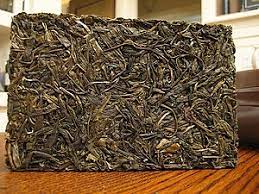
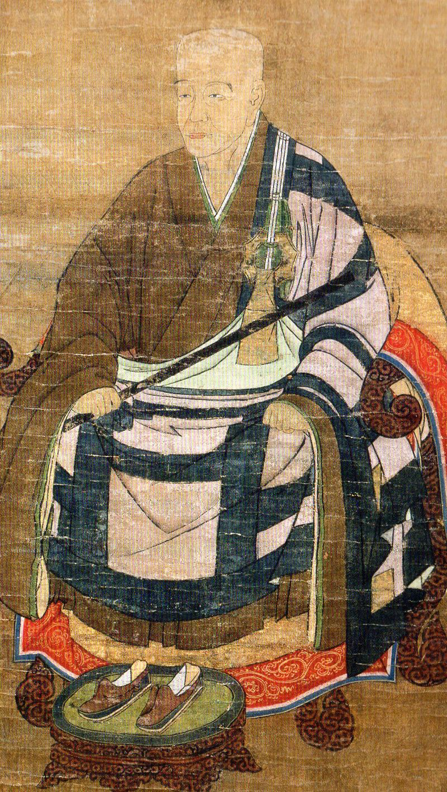

Matcha is a powder that is created by processing premium green tea. Green tea powder is mixed with hot water to produce a frothy beverage rather than steeping it. Matcha preparation, serving, and consumption form the core of the Japanese tea ceremony. The traditional Japanese tea ceremony centers on the preparation, serving and drinking of matcha as hot tea, and embodies a meditative spirituality. Even though matcha's ceremonial roots are what make it so popular, the powder is also used in ice cream, salad dressing, tea lattes,boba tea and other foods and beverages.
Matcha was first created in China where Tea leaves were boiled and made into bricks for storage and trade during the Tang period (618–907). To make the tea, the leaves were roasted and ground into a powder, which was then brewed with hot water and salt. Making powdered tea by steaming dried tea leaves and whipping the powdered tea and hot water combined in a bowl to make the beverage became popular during the Song dynasty (960–1279). The Preperation and consumption of matcha was first formed into a ritual by the "Chan buddhists", with the earliest extant Chan monastic code titled " Chanyuan Qinggui (Rules of Purity for the Chan Monastery)". This Code describes the etiquette for tea ceremonies.
To make their tea crops easier to carry and subsequently trade, the Tang Dynasty at this period steam-formed tea leaves into bricks. These tea bricks were made by roasting and grinding the tea leaves, then combining the powdered tea with salt and water.
A Japanese Buddhist monk named Eisai spent the majority of his life learning about Buddhism in China. Eisai made his permanent return to Japan in 1191 and brought with him tea seeds and Zen Buddhist techniques for making powdered green tea. The tea leaves produced by the seeds Eisai brought back from China were widely regarded as being of the greatest caliber in all of Japan.
After his return, Eisai's sect of Zen Buddhism improved the method of cultivating matcha tea leaves, increasing the popularity of this practice. His group is credited with coming up with the concept of growing matcha leaves in the shade with restricted sunlight control, emphasizing the tea's health advantages while also altering its flavor. Matcha was finally prepared to enter the global scene thanks to this method of controlled growth.
When producing matcha, shade-grown tea leaves which are also used to manufacture gyokuro, are utilized to make matcha. Matcha preparation lasts up to 20 days and begins several weeks before harvest. During this time, the tea bushes are covered to protect them from sunlight. The growth rate is slowed, chlorophyll levels are stimulated to rise, the leaves turn a deeper shade of green, and amino acids, including theanine, are produced. After harvesting, gyokuro (jade dew) tea can be produced if the leaves are wrapped up before drying, just like with sencha (煎茶). However, if the leaves are spread out flat to dry, they will begin to crumble considerably and take on the name tencha (碾茶). Tencha can then be deveined, destemmed, and stone-ground into a fine, bright green, talc-like powder known as matcha.
Left is Sencha(煎茶) and Right is Tencha (碾茶)
Traditionally, there are 2 forms of matcha, Usucha(thin matcha) and Koicha (thick matcha). Both having similar preperation methods. The equipment needed for preparing matcha is:Chawan (Tea Bowl) 茶碗, Chasen (Tea Whisk) 茶筌 and Chashaku (Tea Scoop) 茶杓. For one tea bowl, you will need about 2 g of green tea powder and 60-70 ml of hot water. optional items include: xtra Tea Bowl, cotton cloth and a fine sieve.